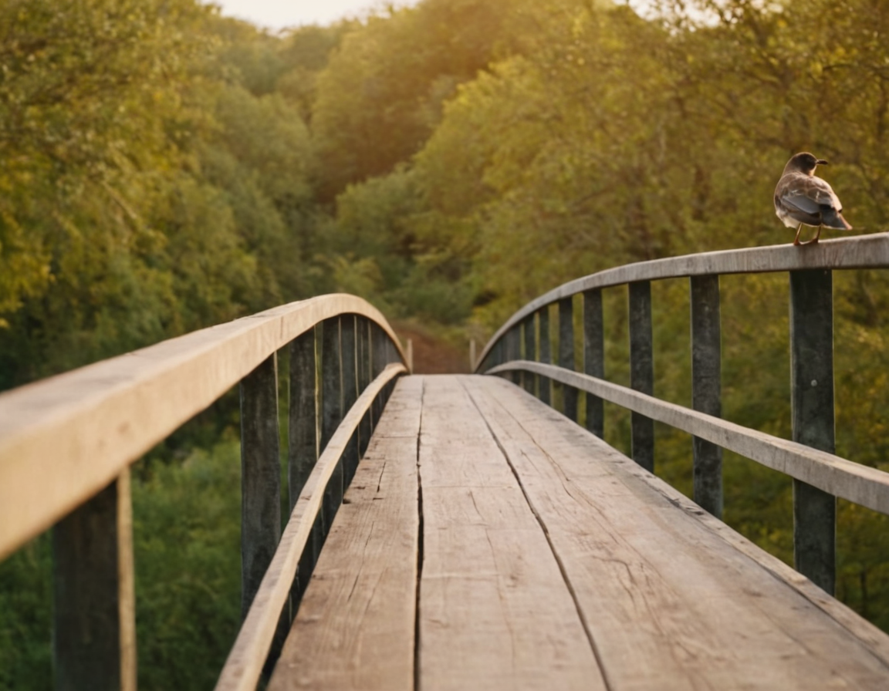

 2026-03-15_11-06-58_1429.png | | Prompt | Bird on a bridge |
| Negative Prompt | |
| Fooocus V2 Expansion | Bird on a bridge, detailed, romantic, enchanted, magic, highly vivid, cinematic, complex artistic color, surreal, beautiful, illuminated, epic, wonderful, light, elegant, intricate, sharp focus, professional composition, cool, elite, best, awesome, gorgeous, creative, cheerful, attractive, charming, pretty, colorful, breathtaking, brilliant, dramatic, amazing, passionate |
| Styles | ['Fooocus V2', 'Fooocus Enhance', 'Fooocus Sharp'] |
| Performance | Speed |
| Steps | 30 |
| Resolution | (1152, 896) |
| Guidance Scale | 4 |
| Sharpness | 2 |
| ADM Guidance | (1.5, 0.8, 0.3) |
| Base Model | juggernautXL_v8Rundiffusion.safetensors |
| Refiner Model | None |
| Refiner Switch | 0.5 |
| CLIP Skip | 2 |
| Sampler | dpmpp_2m_sde_gpu |
| Scheduler | karras |
| VAE | Default (model) |
| Seed | 2418153201291023170 |
| LoRA 1 | sd_xl_offset_example-lora_1.0.safetensors : 0.1 |
| Metadata Scheme | False |
| Version | Fooocus v2.5.5 |
| Full raw prompt | Positivecinematic still Bird on a bridge . emotional, harmonious, vignette, 4k epic detailed, shot on kodak, 35mm photo, sharp focus, high budget, cinemascope, moody, epic, gorgeous, film grain, grainy, Bird on a bridge, detailed, romantic, enchanted, magic, highly vivid, cinematic, complex artistic color, surreal, beautiful, illuminated, epic, wonderful, light, elegant, intricate, sharp focus, professional composition, cool, elite, best, awesome, gorgeous, creative, cheerful, attractive, charming, pretty, colorful, breathtaking, brilliant, dramatic, amazing, passionateNegative(worst quality, low quality, normal quality, lowres, low details, oversaturated, undersaturated, overexposed, underexposed, grayscale, bw, bad photo, bad photography, bad art:1.4), (watermark, signature, text font, username, error, logo, words, letters, digits, autograph, trademark, name:1.2), (blur, blurry, grainy), morbid, ugly, asymmetrical, mutated malformed, mutilated, poorly lit, bad shadow, draft, cropped, out of frame, cut off, censored, jpeg artifacts, out of focus, glitch, duplicate, (airbrushed, cartoon, anime, semi-realistic, cgi, render, blender, digital art, manga, amateur:1.3), (3D ,3D Game, 3D Game Scene, 3D Character:1.1), (bad hands, bad anatomy, bad body, bad face, bad teeth, bad arms, bad legs, deformities:1.3), anime, cartoon, graphic, (blur, blurry, bokeh), text, painting, crayon, graphite, abstract, glitch, deformed, mutated, ugly, disfigured |
|